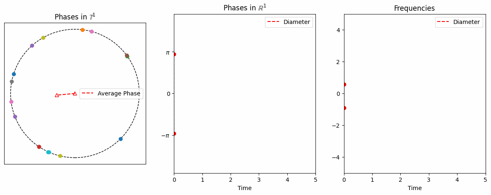

Data-driven approach to complex system
Glassy dynamics.
The Kuramoto system exhibits various phenomena depending on the network structure and the coupling between oscillators. One interesting phenomenon is the glassy behavior of the order parameter, which emerges when the interaction matrix has high rank. The reason behind this phenomenon remains an open question.
Instead, we numerically study this glassy behavior using Extended Dynamic Mode Decomposition (EDMD) and propose a general strategy to detect glassy dynamics and non-exponential relaxation. Furthermore, EDMD can be viewed as a Galerkin approximation of the Koopman operator. We explore the connection between the glassy behavior and the continuum equation, linking it to the Koopman operator of the Kuramoto system.
-
Zachary G. Nicolaou, Hangjun Cho, Yuanzhao Zhang, J. Nathan Kutz and Steven L. Brunton,
Signature of glassy dynamics in dynamic modes decompositions,
arXiv:2502.10918
Mathematical analysis of collective behavior
Inertial Kuramoto model. The inertial Kuramoto model is a well-known synchronization model for \(N\) limit-cycle oscillators with phases \(\theta\), each of which has its own natural frequency \(\nu_i\). When considering an all-to-all network connection, this model is described by the following differential equations: for each \(i=1,\ldots,N\),
\[
\label{eq:example2}
m\ddot{\theta}_i(t) + \gamma\dot{\theta}_i(t) = \nu_i + \frac{\kappa}{N}\sum_{j=1}^N \sin(\theta_j(t) - \theta_i(t)),\quad t>0,
\]
where \(m\) is the inertia and \(\gamma\) is the damping coefficient.
This model was developed to describe the synchronization of a specific type of firefly and transient stability in power systems.

From numerical simulations, one can easily observe asymptotic phase-locking, meaning that \(\exists\lim_{t\to\infty} (\theta_i(t)-\theta_j(t))\) for each \((i,j).\)
However, proving this is challenging, especially when each initial phase is randomly distributed on the circle.
In the work I and II, we provide mathematical analysis for the long time behavior of the system \(\eqref{eq:example2}\) with generic initial configurations.
On the other hand, when \(m\) is large, the second-order system exhibits a distinct feature—an infinite number of phase overlaps on the unit circle (works I,III).
This can be regarded as a generalization of the damped pendulum equation since, in the two-oscillator regime, the phase difference is governed by the damped pendulum equation.
-
Hangjun Cho, Jiu-Gang Dong, Seung-Yeal Ha and Seung-Yeon Ryoo,
Inertia perturbation theory for the inertial Kuramoto model,
arXiv:2508.11241.
-
Hangjun Cho, Jiu-Gang Dong, Seung-Yeal Ha and Seung-Yeon Ryoo,
Quantitative relaxation dynamics from generic initial configurations in the inertial Kuramoto model,
arXiv:2503.00720.
-
Hangjun Cho, Jiu-Gang Dong and Seung-Yeal Ha,
Cardinality of collisions in the asymptotic phase-locking for the Kuramoto model with inertia,
SIAM J. Appl. Dyn. Syst. 22(2), 1472--1501 (2023).
journal link
- Hangjun Cho,
On the emergent behaviors of the inertial Kuramoto model,
PhD Dissertation,
Seoul National Univeristy, 2023.
link